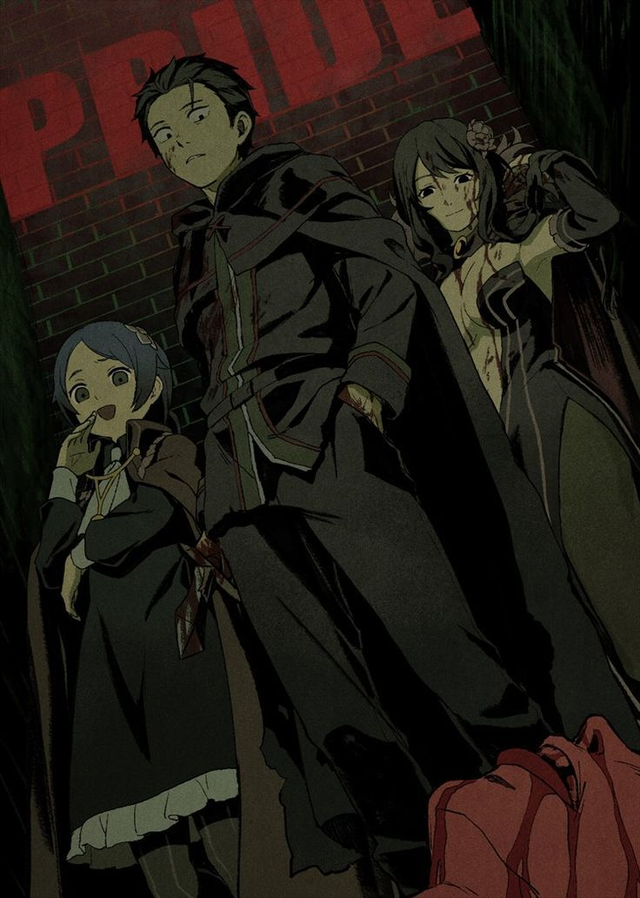
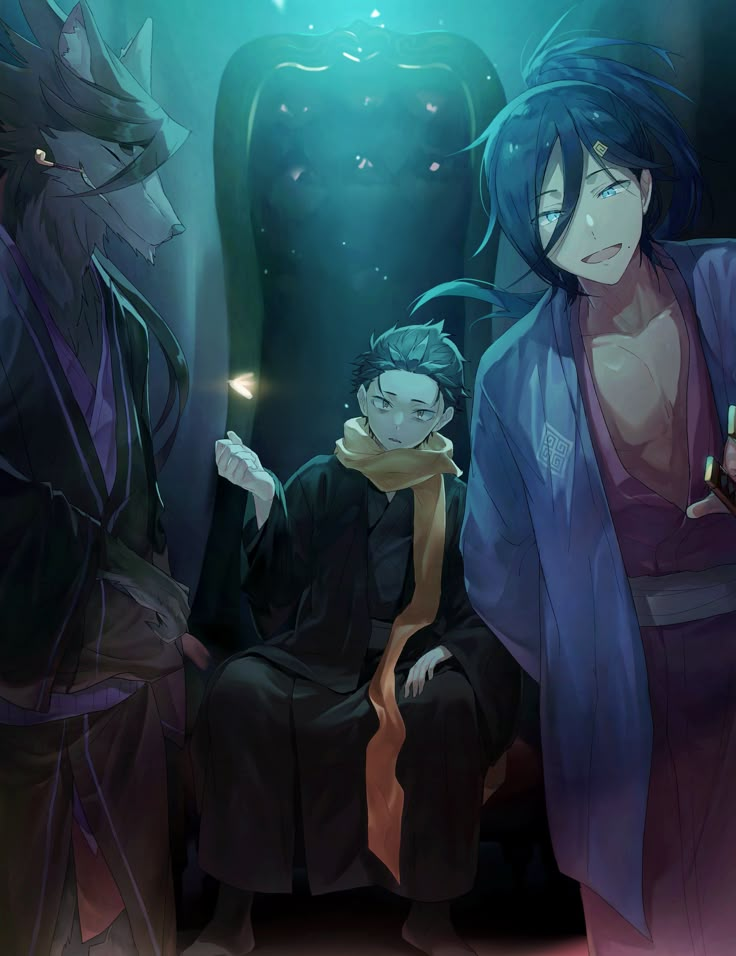
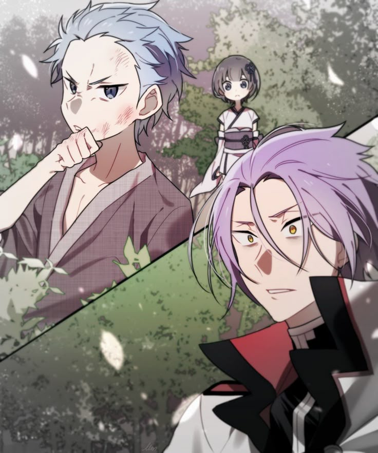
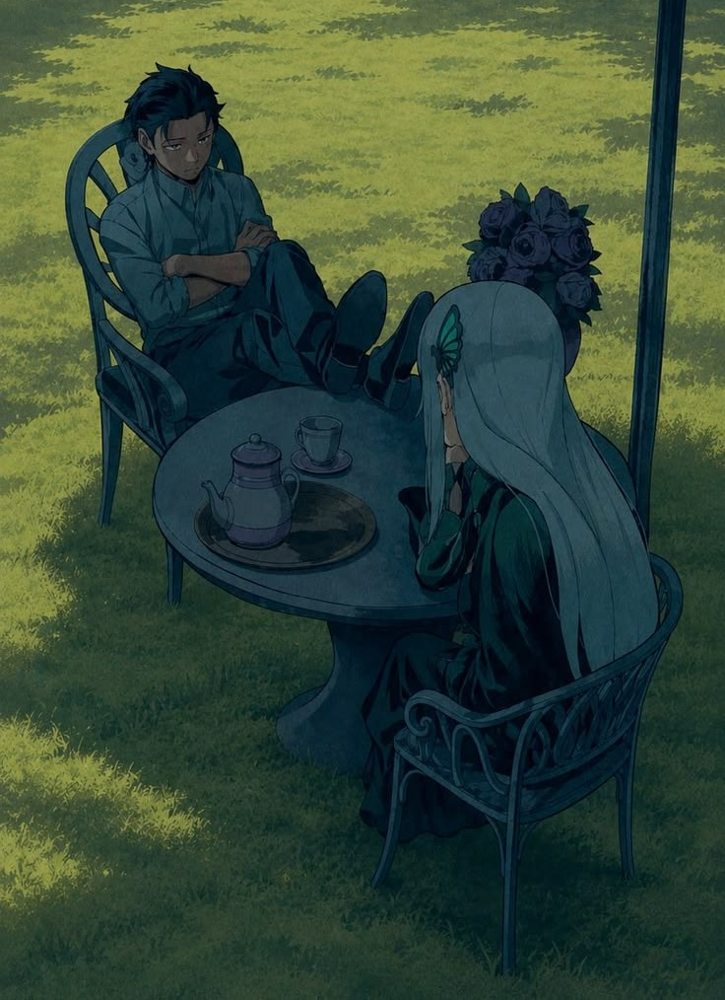
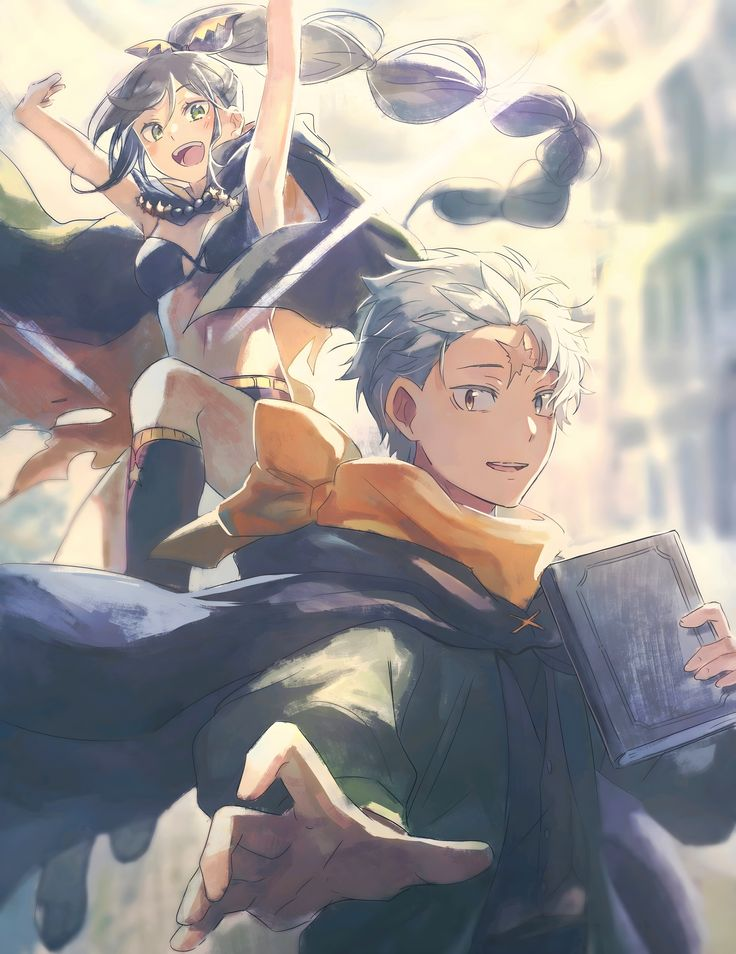
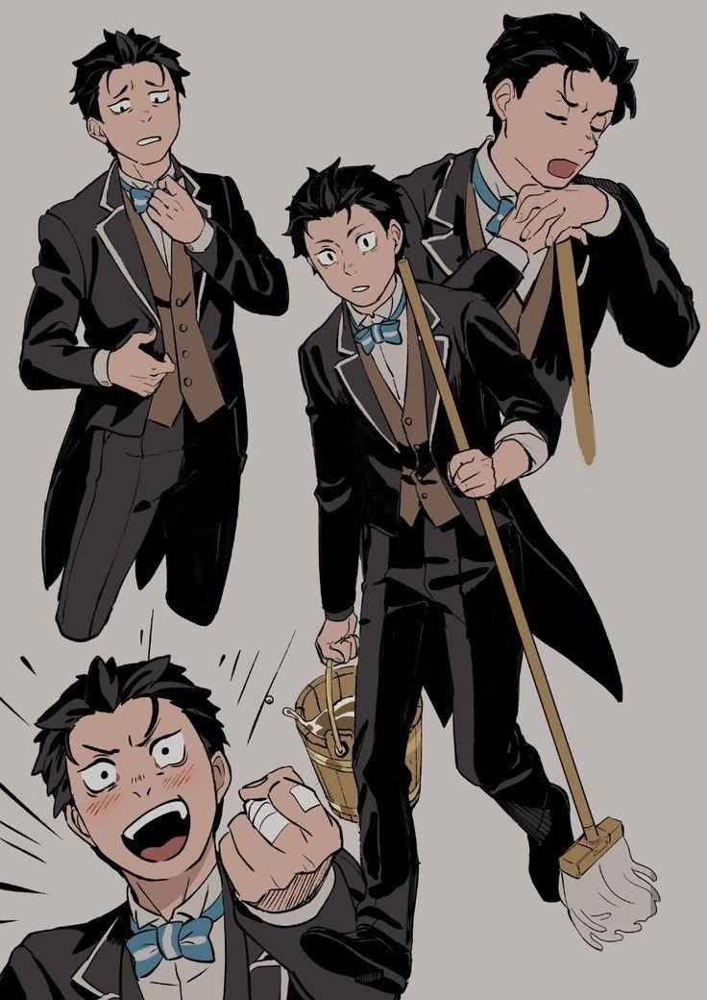
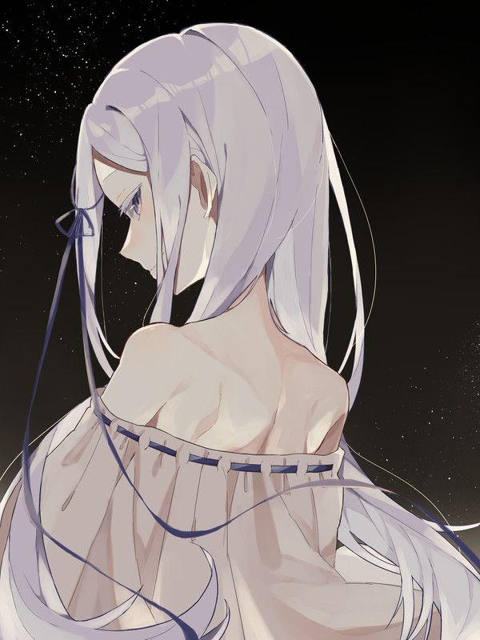

Pride IF
This guy is none other than one of the coolest Barus, his wife is Elsa Granhiert.

Wrath IF
This is Japanese Daniel, I think he likes Ram or smt. He also has two guards for some reason, Halibel the Admirer and Cecilus Segmund.

Sloth IF
This pussy doesn't deserve his own picture, good for him though.

Greed IF
This Daniel is definetly the fans' favourite, prob cuz he bags Echidna or smt.

Gluttony IF
We still need to get to the point in the story in arc 6 whre it diverges from the normal path so idk.

Envy IF
I had to add the Envy Route and Daniel def looks best in his butler outfit.

Pandora
As we all know, Otto is Pandora, but he is also Patrasche and who demonstrated to be this specific Earth Dragon if not Daniel humself?? Subaru is Pandora 100% confirmed I'm Tappei